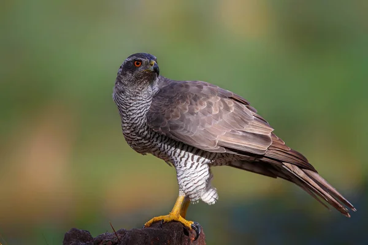

Gavilán común
El gavilán común o Accipiter nisus es una especie de ave de la familia Accipitridae, se encuentra en zonas de Eurasia (desde la península ibérica y el norte de África hasta Japón y Vietnam).
Es una de las especies de ave con mayor dimorfismo sexual respecto al tamaño: la hembra es un 25 % más grande que el macho. A pesar de ser un depredador especializado en las aves del bosque, el gavilán puede hallarse en cualquier hábitat y en las ciudades con frecuencia caza pájaros de jardín.

Es un ave pequeña con alas largas y redondeadas y una cola larga que ayuda a desplazarse entre los árboles. La cola siempre es más larga que el ancho de las alas, y en el macho adulto presenta entre cuatro y cinco franjas onduladas. Sus patas son largas y amarillas y el tarso no es más ancho que el diámetro del ojo.
El pico pequeño le sirve para agarrar y arrastrar a sus presas antes que para matarlas o despedazarlas. Sus largas patas y garras están adaptadas para capturar a las aves. El dedo externo es bastante largo y delgado; el dedo interno y los posteriores son relativamente cortos y gruesos. El del medio es muy largo y lo puede utilizar para agarrar objetos. Por su parte, la protuberancia situada en la parte inferior de la pata permite al ave cerrarla sin dejar ranuras.
El gavilán se reproduce en bosques de gran extensión, generalmente de coníferas o mixtos, aunque prefiere bosques poco abiertos o densos para poder volar con libertad. El nido puede ser localizado en la horcadura de un árbol, cerca del tronco y, a veces en la base de dos o tres ramas, en una rama horizontal ubicada en la parte inferior del dosel, o cerca de la parte superior de un gran arbusto.
La distribución de la especie se extiende en todas las regiones templadas y subtropicales del Viejo Mundo. El gavilán vive o anida en un área estimada de 23.1 millones de km². Es una de las aves rapaces más comunes de Europa, junto al cernícalo y el ratonero.
Páginas sugeridas:
Águila
Buitre
Azor